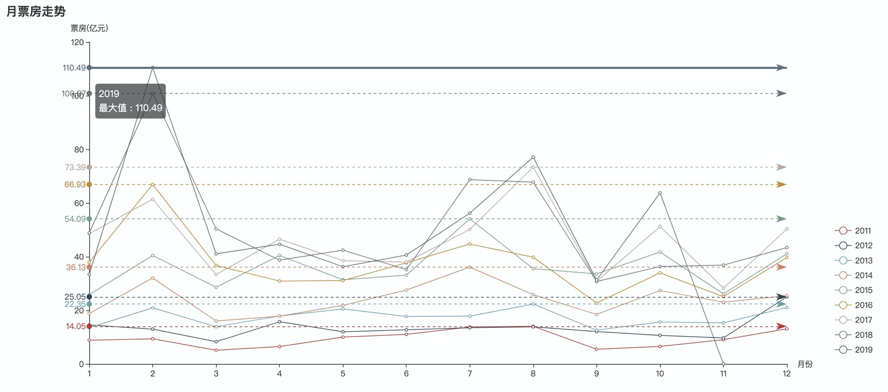
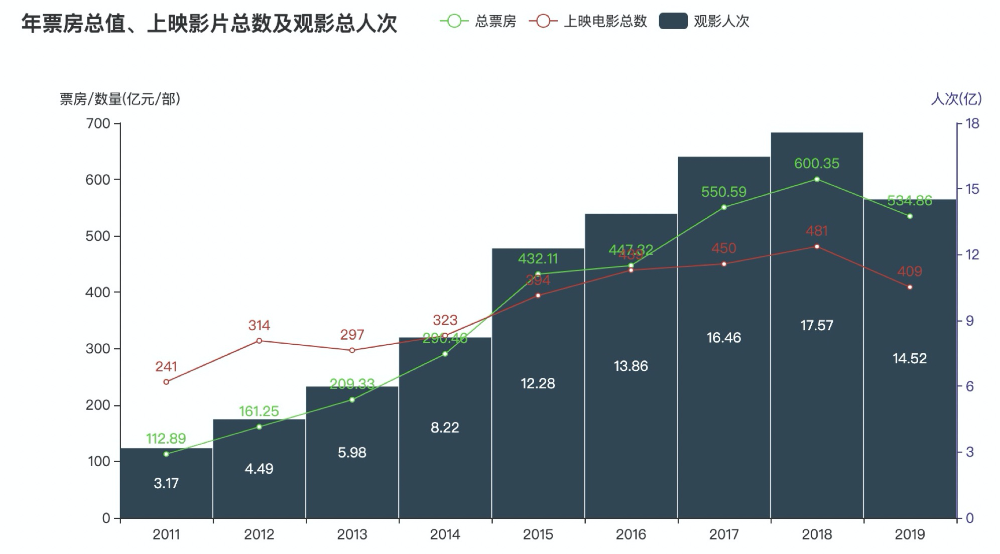
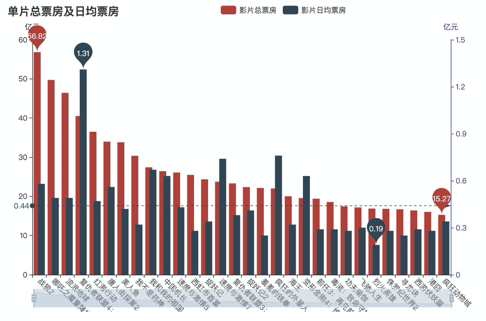
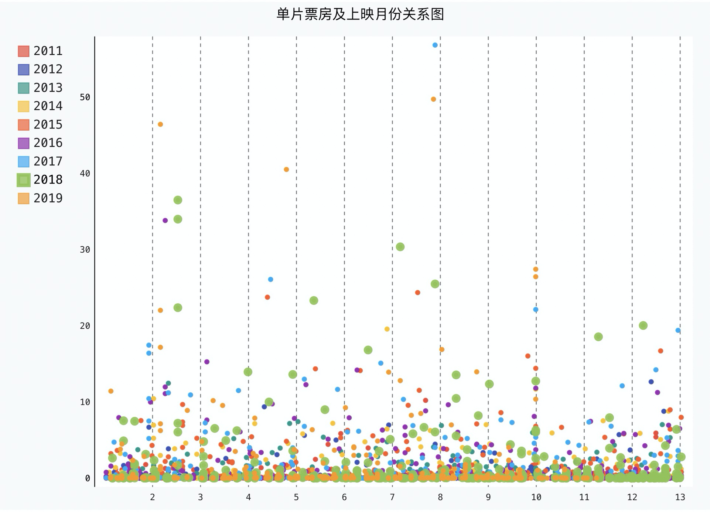

在上一部分《【python数据分析实战】电影票房数据分析(一)数据采集》 已经获取到了2011年至今的票房数据，并保存在了mysql中。
本文将在实操中讲解如何将mysql中的数据抽取出来并做成动态可视化。
第一张图，我们要看一下每月的票房走势，毫无疑问要做成折线图，将近10年的票房数据放在一张图上展示。
数据抽取：
采集到的票房数据是按天统计的，并且我们只看正常上映的和点映的，其他如重映等场次均不在本次统计内。
因此我们先对mysql中的数据releaseInfo字段进行筛选，然后根据上映年份和月份进行分组聚合，得到10年内每月的票房数据。
用sql取到数据后，再将不同年份的数据分别放入list中，原始数据是以"万"为单位的str，这里我们折算为以"亿"为单位的float。
构造图像：
x轴数据为年份，
再分别将不同年份的票房数据添加到y轴中，
最后配置下图像的属性即可。
config = {...} # db配置省略
conn = pymysql.connect(**config)
cursor = conn.cursor()
sql = '''
select substr(`date`,1,4) year,
substr(`date`,5,2) month,
round(sum(`boxInfo`),2) monthbox
from movies_data
where (substr(`releaseInfo`,1,2) = '上映' or `releaseInfo`='点映' )
group by year,month order by year,month
'''
cursor.execute(sql)
data = cursor.fetchall()
x_data = list(set([int(i[1]) for i in data]))
x_data.sort()
x_data = list(map(str, x_data))
y_data1 = [round(int(i[2]) / 10000, 2) for i in data if i[0] == '2011']
y_data2 = [round(int(i[2]) / 10000, 2) for i in data if i[0] == '2012']
y_data3 = [round(int(i[2]) / 10000, 2) for i in data if i[0] == '2013']
y_data4 = [round(int(i[2]) / 10000, 2) for i in data if i[0] == '2014']
y_data5 = [round(int(i[2]) / 10000, 2) for i in data if i[0] == '2015']
y_data6 = [round(int(i[2]) / 10000, 2) for i in data if i[0] == '2016']
y_data7 = [round(int(i[2]) / 10000, 2) for i in data if i[0] == '2017']
y_data8 = [round(int(i[2]) / 10000, 2) for i in data if i[0] == '2018']
y_data9 = [round(int(i[2]) / 10000, 2) for i in data if i[0] == '2019']
cursor.close()
conn.close()
def line_base() -> Line:
c = (
Line(init_opts=opts.InitOpts(height="600px", width="1300px"))
.add_xaxis(x_data)
.add_yaxis("2011", y_data1)
.add_yaxis("2012", y_data2)
.add_yaxis("2013", y_data3)
.add_yaxis("2014", y_data4)
.add_yaxis("2015", y_data5)
.add_yaxis("2016", y_data6)
.add_yaxis("2017", y_data7)
.add_yaxis("2018", y_data8)
.add_yaxis("2019", y_data9)
.set_global_opts(title_opts=opts.TitleOpts(title="月票房走势"),
legend_opts=opts.LegendOpts(
type_="scroll", pos_top="55%", pos_left="95%", orient="vertical"),
xaxis_opts=opts.AxisOpts(
axistick_opts=opts.AxisTickOpts(is_align_with_label=True), boundary_gap=False, ),)
.set_series_opts(label_opts=opts.LabelOpts(is_show=False), # 不显示柱体上的标注(数值)
markline_opts=opts.MarkLineOpts(
data=[opts.MarkLineItem(type_="max", name="最大值"), ]), )
.extend_axis(yaxis=opts.AxisOpts(name="票房(亿元)", position='left'), # 设置y轴标签显示格式，数据+"人"
xaxis=opts.AxisOpts(name="月份"))
)
return c
line_base().render("v1.html")有本图可以看出：
1、近10年票房总数逐渐增长(当然这是废话)
2、11-13年每月票房波动很小，几乎没有明显的高峰档期，最近两年高峰档期最为明显，集中在春节、暑期和十一。

第二张图，我们要看一下票房、上映影片数和观影人次 逐年的变化情况
数据抽取：
先筛选releaseInfo 为正常上映和首映的数据，
再按年份分组，也就是date字段的前4位，
构造图像：
因为三类数据的x轴都是年份，所以可放在一张图上展示，为了观察更直观，将其中一项数据作成柱状图，另外两项做成折线图。
config = {...} # db配置省略
conn = pymysql.connect(**config)
cursor = conn.cursor()
sql2 = '''select substr(date,1,4),
round(sum(boxInfo)/10000,2),
count(DISTINCT movieId),
round(sum(avgShowView*showInfo)/100000000,2)
from movies_data
where (substr(`releaseInfo`,1,2) = '上映' or `releaseInfo`='点映' )
GROUP by substr(date,1,4)'''
cursor.execute(sql2)
data2 = cursor.fetchall()
x_data2 = [i[0] for i in data2]
y_data2_1 = [i[1] for i in data2]
y_data2_2 = [i[2] for i in data2]
y_data2_3 = [i[3] for i in data2]
cursor.close()
conn.close()
def bar_base() -> Line:
c = (
Line()
.add_xaxis(x_data2)
.add_yaxis("总票房", y_data2_1, yaxis_index=0)
.add_yaxis("上映电影总数", y_data2_2, color='LimeGreen', yaxis_index=0, )
.set_global_opts(title_opts=opts.TitleOpts(title="年票房总值、上映影片总数及观影总人次"),
legend_opts=opts.LegendOpts(pos_left="40%"),
)
.extend_axis(
yaxis=opts.AxisOpts(name="票房/数量(亿元/部)", position='left'))
.extend_axis(
yaxis=opts.AxisOpts(name="人次(亿)", type_="value", position="right", # 设置y轴的名称，类型，位置
axisline_opts=opts.AxisLineOpts(linestyle_opts=opts.LineStyleOpts(color="#483D8B")), ))
)
bar = (
Bar()
.add_xaxis(x_data2)
.add_yaxis("观影人次", y_data2_3, yaxis_index=2, category_gap="1%",
label_opts=opts.LabelOpts(position="inside"))
)
c.overlap(bar)
return Grid().add(c, opts.GridOpts(pos_left="10%",pos_top='20%'), is_control_axis_index=True) # 调整位置
bar_base().render("v2.html")
本图可以看出：
（2019年数据下滑是因为统计时 2019年刚到10月下旬，还没有得到一年完整的数据。）
1、上映影片数增长幅度不大，票房和观影人次涨幅相近，因此票房逐年增长的最主要原因是观影人次的增长，年平均票价应该变化不大。

影片的上映期长短不一，这也影响了影片的票房情况，所以这张图我们要看一下单片总票房和日均票房的情况。
config = {...} # db配置省略
conn = pymysql.connect(**config)
cursor = conn.cursor()
sql2 = '''select a.*,b.releasemonth from
(select movieid,
moviename,
round(sum(boxinfo)/10000,2) sumBox,
count(movieid) releasedays,
round(sum(boxinfo)/count(movieid)/10000,2) avgdaybox
from movies_data
where (substr(`releaseInfo`,1,2) = '上映' or `releaseInfo`='点映' )
group by movieid,moviename) a ,
(select substr(date,5,2) releasemonth,movieId,movieName,releaseInfo from movies_data where releaseInfo='上映首日') b
where a.movieid = b.movieid order by sumBox desc'''
cursor.execute(sql2)
data3 = cursor.fetchall()
x_data3 = [i[1] for i in data3[:30]] # 名称
y_data3_1 = [i[2] for i in data3[:30]] # 总票房
y_data3_2 = [i[4] for i in data3[:30]] # 日均票房
y_data3_3 = [int(i[5]) for i in data3[:30]] # 上映月份
cursor.close()
conn.close()
def bar_base() -> Line:
c = (
Bar(init_opts=opts.InitOpts(height="600px", width="1500px"))
.add_xaxis(x_data3)
.add_yaxis("影片总票房", y_data3_1, yaxis_index=0)
# .add_yaxis("影片日均票房", y_data3_2, yaxis_index=1, gap='-40%')
.set_global_opts(title_opts=opts.TitleOpts(title="单片总票房及日均票房"),
xaxis_opts=opts.AxisOpts(axislabel_opts=opts.LabelOpts(rotate=-45)),
datazoom_opts=opts.DataZoomOpts(), )
.set_series_opts(label_opts=opts.LabelOpts(is_show=False), # 不显示柱体上的标注(数值)
markpoint_opts=opts.MarkPointOpts(
data=[opts.MarkPointItem(type_="max", name="最大值"),
opts.MarkPointItem(type_="min", name="最小值"), ]),)
.extend_axis(
yaxis=opts.AxisOpts(name="亿元", position='left'))
.extend_axis(
yaxis=opts.AxisOpts(name="亿元", type_="value", position="right", # 设置y轴的名称，类型，位置
axisline_opts=opts.AxisLineOpts(linestyle_opts=opts.LineStyleOpts(color="#483D8B")), ))
)
bar = (
Bar(init_opts=opts.InitOpts(height="600px", width="1500px"))
.add_xaxis(x_data3)
# .add_yaxis("影片总票房", y_data3_1, yaxis_index=0)
.add_yaxis("影片日均票房", y_data3_2, yaxis_index=2, gap='-40%')
.set_global_opts(title_opts=opts.TitleOpts(title="单片总票房及日均票房"),)
.set_series_opts(label_opts=opts.LabelOpts(is_show=False), # 不显示柱体上的标注(数值)
markpoint_opts=opts.MarkPointOpts(
data=[opts.MarkPointItem(type_="max", name="最大值"),
opts.MarkPointItem(type_="min", name="最小值"), ]),
markline_opts=opts.MarkLineOpts(
data=[opts.MarkLineItem(type_="average", name="平均值"), ]
),)
)
c.overlap(bar)
return Grid().add(c, opts.GridOpts(pos_left="5%", pos_right="20%"), is_control_axis_index=True) # 调整位置
bar_base().render("v3.html")
可以看出有的电影虽然总票房一般，但是日均票房很高，说明上映时间不长但却很火爆。
而对于总票房很高，但日均票房一般的影片，可能是由于上映时间较长，后期较低的上座率拉低了日均票房。
所以看一个影片的火爆程度，总票房只是一方面，在相同上映时间内的上座率变化趋势也很重要。

本图相当于图一的补充，主要是看一下高票房的影片和上映时间的关系
def dayformat(i):
mm = int(i[-2])
dd = int(i[-1])
mmdd = mm + dd/100*3.3
return mmdd
config = {...} # db配置省略
conn = pymysql.connect(**config)
cursor = conn.cursor()
sql2 = '''select a.*,b.releaseyear,b.releasemonth,b.releaseday from
(select movieid,
moviename,
round(sum(boxinfo)/10000,2) sumBox,
count(movieid) releasedays,
round(sum(boxinfo)/count(movieid)/10000,2) avgdaybox
from movies_data
where (substr(`releaseInfo`,1,2) = '上映' or `releaseInfo`='点映' )
group by movieid,moviename) a ,
(select substr(date,1,4) releaseyear,
substr(date,5,2) releasemonth,
substr(date,7,2) releaseday,
movieId,
movieName,
releaseInfo
from movies_data where releaseInfo='上映首日') b
where a.movieid = b.movieid order by sumBox desc'''
cursor.execute(sql2)
data4 = cursor.fetchall()
x_data4 = [i for i in range(1, 13)]
y_data4_1 = [(dayformat(i), i[2]) for i in data4 if i[-3] == '2011']
y_data4_2 = [(dayformat(i), i[2]) for i in data4 if i[-3] == '2012']
y_data4_3 = [(dayformat(i), i[2]) for i in data4 if i[-3] == '2013']
y_data4_4 = [(dayformat(i), i[2]) for i in data4 if i[-3] == '2014']
y_data4_5 = [(dayformat(i), i[2]) for i in data4 if i[-3] == '2015']
y_data4_6 = [(dayformat(i), i[2]) for i in data4 if i[-3] == '2016']
y_data4_7 = [(dayformat(i), i[2]) for i in data4 if i[-3] == '2017']
y_data4_8 = [(dayformat(i), i[2]) for i in data4 if i[-3] == '2018']
y_data4_9 = [(dayformat(i), i[2]) for i in data4 if i[-3] == '2019']
cursor.close()
conn.close()
my_config = pygal.Config() # 创建Config实例
my_config.show_y_guides = False # 隐藏水平虚线
my_config.show_x_guides = True
xy_chart = pygal.XY(stroke=False, config=my_config)
xy_chart.title = '单片票房及上映月份关系图'
xy_chart.add('2011', y_data4_1)
xy_chart.add('2012', y_data4_2)
xy_chart.add('2013', y_data4_3)
xy_chart.add('2014', y_data4_4)
xy_chart.add('2015', y_data4_5)
xy_chart.add('2016', y_data4_6)
xy_chart.add('2017', y_data4_7)
xy_chart.add('2018', y_data4_8)
xy_chart.add('2019', y_data4_9)
xy_chart.render_to_file("v4.svg")
